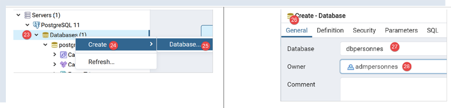
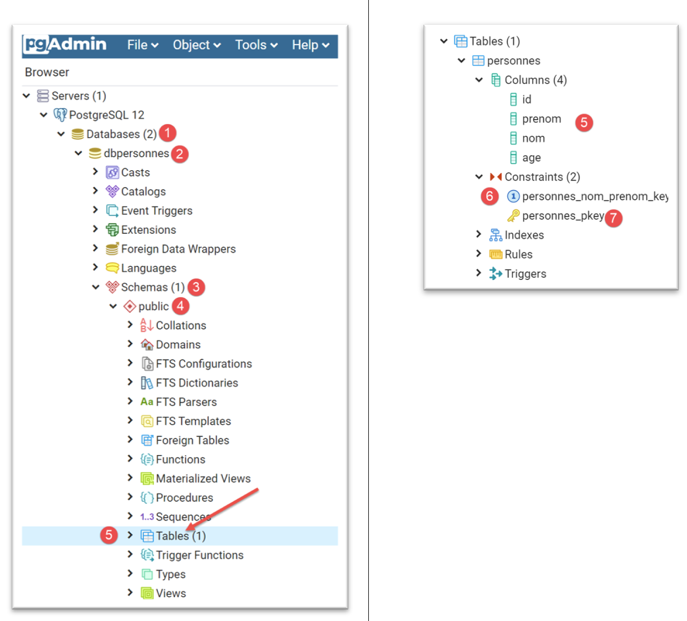
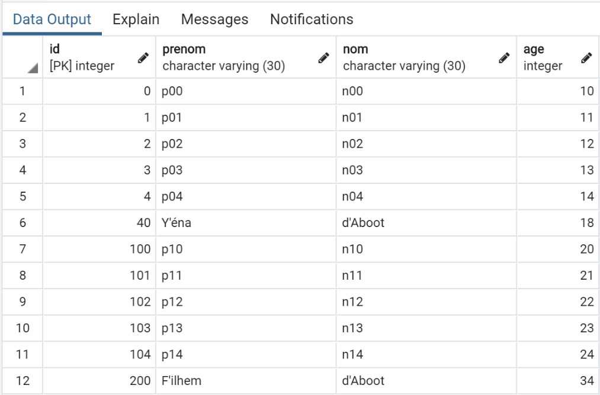

17. Utilização do SGBD PostgreSQL
O SGBD PostgreSQL está disponível gratuitamente. É uma alternativa à versão «comunitária» do MySQL.
Estamos a utilizá-lo aqui para demonstrar que é bastante simples migrar scripts Python/MySQL para scripts Python/PostgreSQL.
Com o SGBD MySQL, a arquitetura dos nossos scripts era a seguinte:

Com o SGBD PostgreSQL, será a seguinte:

17.1. Instalação do SGBD PostgreSQL
As distribuições do SGBD PostgreSQL estão disponíveis no URL [https://www.postgresql.org/download/] (maio de 2019). Demonstramos a instalação da versão para Windows de 64 bits:


- Em [1-4], descarregue o instalador do SGBD;
Execute o instalador descarregado:

- Em [6], especifique um diretório de instalação;

- Em [8], a opção [Stack Builder] não é necessária para o que estamos a fazer aqui;
- em [10], mantenha o valor padrão;

- Em [12-13], introduzimos aqui a palavra-passe [root]. Esta será a palavra-passe do administrador do SGBD, cujo nome é [postgres]. O PostgreSQL também se refere a este como o superutilizador;
- Em [15], mantenha o valor padrão: esta é a porta de escuta do SGBD;

- em [17], mantenha o valor padrão;
- Em [19], o resumo da configuração da instalação;


No Windows, o SGBD PostgreSQL é instalado como um serviço do Windows que inicia automaticamente. Na maioria das vezes, isto não é desejável. Vamos modificar esta configuração. Digite [serviços] na barra de pesquisa do Windows [24-26]:

- em [29], pode ver que o serviço do SGBD PostgreSQL está definido para o modo automático. Altere isto acedendo às propriedades do serviço [30]:

- Em [31-32], defina o tipo de arranque para Manual;
- em [33], pare o serviço;
Quando pretender iniciar o SGBD manualmente, volte à aplicação [serviços], clique com o botão direito do rato no serviço [postgresql] (34) e inicie-o (35).
17.2. Administração do PostgreSQL com a ferramenta [pgAdmin]
Inicie o serviço do Windows para o SGBD PostgreSQL (ver parágrafo anterior). Em seguida, da mesma forma que iniciou a ferramenta [Serviços], inicie a ferramenta [pgAdmin], que permite administrar o SGBD PostgreSQL [1-3]:

Poderá ser-lhe solicitada a palavra-passe de superutilizador em algum momento. O superutilizador chama-se [postgres]. Esta palavra-passe é definida durante a instalação do SGBD. Neste documento, atribuímos a palavra-passe [root] ao superutilizador durante a instalação.
- Em [4], [pgAdmin] é uma aplicação web;
- em [5], a lista de servidores PostgreSQL detetados pelo [pgAdmin], aqui 1;
- em [6], o servidor PostgreSQL que iniciámos;
- em [7], as bases de dados do DBMS, aqui 1;
- em [8], a base de dados [postgresql] é gerida pelo superutilizador [postgres];
Primeiro, vamos criar um utilizador [admpersonnes] com a palavra-passe [nobody]:


- em [17], introduzimos [nobody];

- em [21], o código SQL que a ferramenta [pgAdmin] enviará ao SGBD PostgreSQL. Esta é uma forma de aprender a linguagem SQL proprietária do PostgreSQL;
- Em [22], após confirmar com o assistente [Save], o utilizador [admpersonnes] foi criado;
Agora criamos a base de dados [dbpersonnes]:

Clique com o botão direito do rato em [23] e, em seguida, em [24-25] para criar uma nova base de dados. No separador [26], defina o nome da base de dados [27] e o seu proprietário [admpersonnes] [28].

- Em [30], o código SQL para criar a base de dados;
- Em [31], após confirmar com o assistente [Guardar], a base de dados [dbpersonnes] é criada;
Iremos utilizar a base de dados [dbpersonnes] com scripts Python.
17.3. Instalação do conector Python para o SGBD PostgreSQL
O diagrama acima mostra um conector que liga scripts Python ao SGBD PostgreSQL. Existem vários disponíveis. Iremos instalar o conector [psycopg2]. Isto é feito num terminal Python (independentemente do diretório em que o terminal está aberto). O conector é instalado utilizando o comando [pip install psycopg2]:
(venv) C:\Data\st-2020\dev\python\cours-2020\python3-flask-2020\troiscouches\v01\tests>pip install psycopg2
Collecting psycopg2
Downloading psycopg2-2.8.5-cp38-cp38-win_amd64.whl (1.1 MB)
|| 1.1 MB 3.2 MB/s
Installing collected packages: psycopg2
Successfully installed psycopg2-2.8.5
17.4. Portar scripts MySQL para scripts PostgreSQL

- A pasta [1] que contém os scripts do MySQL é duplicada (Ctrl-C / Ctrl-V) e, em seguida, os nomes dos ficheiros são alterados para corresponderem ao seu conteúdo;
17.4.1. [pgres_module]
Este módulo é uma cópia do módulo [mysql_module] (ver secção |script [mysql-04]: execução de um ficheiro de comando SQL|). Altere as importações:
Em vez de:
escrevemos:
A assinatura da função [display_info] era:
def afficher_infos(curseur: MySQLCursor):
Passa a ser:
def afficher_infos(curseur: cursor)
A assinatura da função [execute_list_of_commands] era:
def execute_list_of_commands(connexion: MySQLConnection, sql_commands: list,
suivi: bool = False, arrêt: bool = True, with_transaction: bool = True)
Passa a ser:
def execute_list_of_commands(connexion: connection, sql_commands: list,
suivi: bool = False, arrêt: bool = True, with_transaction: bool = True):
Caso contrário, nada mais muda.
17.4.2. script [pgres_01]
O script [pgres_01] é uma cópia do script [mysql_01] (ver secção |script [mysql-01]: ligar a uma base de dados MySQL - 1|). São feitas as seguintes alterações:
Em vez de:
Escrevemos:
O resto permanece inalterado. Os resultados são os mesmos que com o MySQL.
17.4.3. script [pgres_02]
O script [pgres_02] é uma cópia do script [mysql_02] (ver secção |script [mysql-02]: ligar a uma base de dados MySQL - 2|). Efetue as seguintes alterações:
Em vez de:
escrevemos:
Os resultados não são os mesmos que os do script [mysql_02]:
O script [pgres_02] é o seguinte:
Embora as linhas 36–41 devessem ter exibido uma mensagem de erro indicando que a ligação ao DBMS falhou, nada é exibido. De facto, após uma investigação mais aprofundada, verificamos que o código entra efetivamente no bloco [except] nas linhas 35–37, mas a variável [error] é definida como [None]. Isto ocorre com a versão 2.8.4 do conector [psycopg2].
Podemos contornar este problema escrevendo uma mensagem genérica, mas menos precisa:
Os resultados são os seguintes:
C:\Data\st-2020\dev\python\cours-2020\python3-flask-2020\venv\Scripts\python.exe C:/Data/st-2020/dev/python/cours-2020/python3-flask-2020/databases/postgresql/pgres_02.py
Connexion réussie à la base database=dbpersonnes, host=localhost sous l'identité user=admpersonnes, passwd=nobody
Déconnexion réussie
Erreur de connexion à la base [dbpersonnes] par l'utilisateur [xx/yy]
Process finished with exit code 0
17.4.4. script [pgres_03]
O script [pgres_03] é uma cópia do script [mysql_03] (ver secção |script [mysql-03]: criar uma tabela MySQL|). Foram-lhe feitas as seguintes alterações:
Em vez de:
from mysql.connector import DatabaseError, InterfaceError, connect
from mysql.connector.connection import MySQLConnection
escrevemos:
from psycopg2 import DatabaseError, InterfaceError, connect
from psycopg2.extensions import connection
Além disso, a assinatura da função [execute_sql], que era:
def execute_sql(connexion: MySQLConnection, update: str):
passa a ser:
def execute_sql(connexion: connection, update: str):
O resto permanece inalterado. O resultado é o seguinte:
C:\Data\st-2020\dev\python\cours-2020\python3-flask-2020\venv\Scripts\python.exe C:/Data/st-2020/dev/python/cours-2020/python3-flask-2020/databases/postgresql/pgres_03.py
create table personnes (id int PRIMARY KEY, prenom varchar(30) NOT NULL, nom varchar(30) NOT NULL, age integer NOT NULL, unique(nom,prenom)) : requête réussie
Process finished with exit code 0
Pode verificar a existência da tabela [people] utilizando a ferramenta de administração [pgAdmin]:

17.4.5. script [pgres_04]
O script [pgres_04] é uma cópia do script [mysql_04] (consulte a secção |script [mysql-04]: execução de um ficheiro de comando SQL|). Utiliza o módulo [pgres_module]:
O resto permanece inalterado.
Criamos uma configuração [pgres pgres-04 without_transaction], tal como foi feito na secção |script [mysql-04]: execução de um ficheiro de comando SQL|. Criamos também uma configuração [pgres pgres-04 with_transaction].
A execução da configuração [pgres pgres-04 without_transaction] produz os seguintes resultados:
C:\Data\st-2020\dev\python\cours-2020\python3-flask-2020\venv\Scripts\python.exe C:/Data/st-2020/dev/python/cours-2020/python3-flask-2020/databases/postgresql/pgres_04.py false
--------------------------------------------------------------------
Exécution du fichier SQL C:\Data\st-2020\dev\python\cours-2020\python3-flask-2020\databases\postgresql/data/commandes.sql sans transaction
--------------------------------------------------------------------
[drop table if exists personnes] : Exécution réussie
nombre de lignes modifiées : -1
[create table personnes (id int primary key, prenom varchar(30) not null, nom varchar(30) not null, age integer not null, unique (nom,prenom))] : Exécution réussie
nombre de lignes modifiées : -1
[insert into personnes(id, prenom, nom, age) values(1, 'Paul','Langevin',48)] : Exécution réussie
nombre de lignes modifiées : 1
[insert into personnes(id, prenom, nom, age) values (2, 'Sylvie','Lefur',70)] : Exécution réussie
nombre de lignes modifiées : 1
[select prenom, nom, age from personnes] : Exécution réussie
prenom, nom, age,
*****************
('Paul', 'Langevin', 48)
('Sylvie', 'Lefur', 70)
*****************
xx : Erreur (ERREUR: erreur de syntaxe sur ou près de « xx »
LINE 1: xx
^
)
[insert into personnes(id, prenom, nom, age) values (3, 'Pierre','Nicazou',35)] : Exécution réussie
nombre de lignes modifiées : 1
[insert into personnes(id, prenom, nom, age) values (4, 'Geraldine','Colou',26)] : Exécution réussie
nombre de lignes modifiées : 1
[insert into personnes(id, prenom, nom, age) values (5, 'Paulette','Girond',56)] : Exécution réussie
nombre de lignes modifiées : 1
[select prenom, nom, age from personnes] : Exécution réussie
prenom, nom, age,
*****************
('Paul', 'Langevin', 48)
('Sylvie', 'Lefur', 70)
('Pierre', 'Nicazou', 35)
('Geraldine', 'Colou', 26)
('Paulette', 'Girond', 56)
*****************
[select nom,prenom from personnes order by nom asc, prenom desc] : Exécution réussie
nom, prenom,
************
('Colou', 'Geraldine')
('Girond', 'Paulette')
('Langevin', 'Paul')
('Lefur', 'Sylvie')
('Nicazou', 'Pierre')
************
[select nom,prenom,age from personnes where age between 20 and 40 order by age desc, nom asc, prenom asc] : Exécution réussie
nom, prenom, age,
*****************
('Nicazou', 'Pierre', 35)
('Colou', 'Geraldine', 26)
*****************
[insert into personnes(id, prenom, nom, age) values(6, 'Josette','Bruneau',46)] : Exécution réussie
nombre de lignes modifiées : 1
[update personnes set age=47 where nom='Bruneau'] : Exécution réussie
nombre de lignes modifiées : 1
[select nom,prenom,age from personnes where nom='Bruneau'] : Exécution réussie
nom, prenom, age,
*****************
('Bruneau', 'Josette', 47)
*****************
[delete from personnes where nom='Bruneau'] : Exécution réussie
nombre de lignes modifiées : 1
[select nom,prenom,age from personnes where nom='Bruneau'] : Exécution réussie
nom, prenom, age,
*****************
*****************
--------------------------------------------------------------------
Exécution terminée
--------------------------------------------------------------------
Il y a eu 1 erreur(s)
xx : Erreur (ERREUR: erreur de syntaxe sur ou près de « xx »
LINE 1: xx
^
)
Process finished with exit code 0
- Linha 5: Tivemos de modificar o comando para eliminar a tabela [people]. Ao contrário do conector MySQL, o conector PostgreSQL lança uma exceção se a tabela a ser eliminada não existir. O comando [drop table] tem uma variante, [drop table if exists], que não lança uma exceção se a tabela não existir. Utilizámo-la aqui. Este é um exemplo em que dois SGBDs não se comportam da mesma forma em situações semelhantes;
A tabela [people] na ferramenta [pgAdmin] é a seguinte:

A execução da configuração [pgres pgres_04 with_transaction] produz os seguintes resultados:
C:\Data\st-2020\dev\python\cours-2020\python3-flask-2020\venv\Scripts\python.exe C:/Data/st-2020/dev/python/cours-2020/python3-flask-2020/databases/postgresql/pgres_04.py true
--------------------------------------------------------------------
Exécution du fichier SQL C:\Data\st-2020\dev\python\cours-2020\python3-flask-2020\databases\postgresql/data/commandes.sql avec transaction
--------------------------------------------------------------------
[drop table if exists personnes] : Exécution réussie
nombre de lignes modifiées : -1
[create table personnes (id int primary key, prenom varchar(30) not null, nom varchar(30) not null, age integer not null, unique (nom,prenom))] : Exécution réussie
nombre de lignes modifiées : -1
[insert into personnes(id, prenom, nom, age) values(1, 'Paul','Langevin',48)] : Exécution réussie
nombre de lignes modifiées : 1
[insert into personnes(id, prenom, nom, age) values (2, 'Sylvie','Lefur',70)] : Exécution réussie
nombre de lignes modifiées : 1
[select prenom, nom, age from personnes] : Exécution réussie
prenom, nom, age,
*****************
('Paul', 'Langevin', 48)
('Sylvie', 'Lefur', 70)
*****************
xx : Erreur (ERREUR: erreur de syntaxe sur ou près de « xx »
LINE 1: xx
^
)
--------------------------------------------------------------------
Exécution terminée
--------------------------------------------------------------------
Il y a eu 1 erreur(s)
xx : Erreur (ERREUR: erreur de syntaxe sur ou près de « xx »
LINE 1: xx
^
)
Process finished with exit code 0
A tabela [people] na ferramenta [pgAdmin] é a seguinte:

Aqui, o resultado difere do obtido com o MySQL. Se executarmos os scripts nas mesmas condições — ou seja, após executar o script sem uma transação — obtemos os seguintes resultados:
- Com o MySQL, a tabela [people] está vazia;
- com o PostgreSQL, a tabela [people] não está vazia;
A diferença reside nas diferentes formas como estes dois SGBDs revertem a transação:
- O MySQL não reverte os comandos [drop table] e [create table]. Acabamos por ficar com uma tabela [people] vazia;
- O PostgreSQL reverte os comandos [drop table] e [create table]. A tabela é restaurada ao estado em que se encontrava antes da execução do script, através de uma transação;
17.4.6. script [pgres_05]
O script [pgres_05] é uma cópia do script [mysql_05] (ver secção |script [mysql-05]: utilização de consultas parametrizadas|). O script é modificado da seguinte forma:
Em vez de:
escrevemos:
O resto permanece inalterado.
Os resultados obtidos no [pgAdmin] são os seguintes:

17.5. Conclusão
Portar os scripts do MySQL para scripts do PostgreSQL foi relativamente fácil. Esta é uma exceção. Os dois SGBDs não suportam as mesmas convenções de nomenclatura para objetos SQL (bases de dados, tabelas, colunas, restrições, tipos de dados, etc.) e têm extensões SQL incompatíveis… Para garantir uma portabilidade simples, é necessário aderir ao padrão SQL em ambos os casos, sem tentar utilizar as extensões proprietárias do SGBD. Isto tem um custo em termos de desempenho.